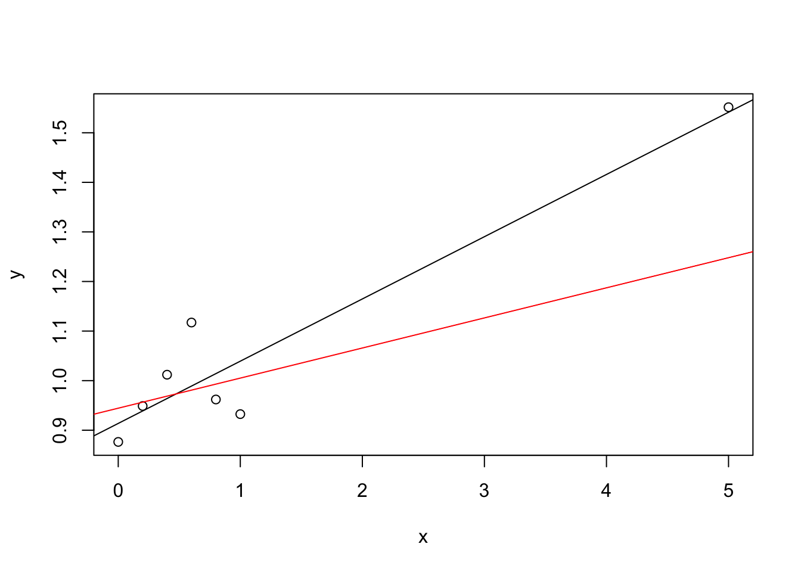

Section 8 The Influence of Observations
In this section we consider the influence which individual samples have on the estimate. Samples with a large influence may be outliers, and are worth checking for validity.
8.1 Deleting Observations
The most direct way to check for the influence of an observation is to compute the parameter estimate \(\hat\beta\) both with and without the observation in question, and to see how much the two results differ.
Definition 8.1 For \(I \subset \{1, \ldots, n\}\) we write \(\hat\beta^{(I)}\) for the estimate where all observations \(i\in I\) have been removed. As a shorthand we write \(\hat\beta^{(i)}\) instead of \(\hat\beta^{(\{i\})}\) for the case where only a single observation has been removed.
This approach is very different from what we used in the section about Estimating Coefficients Simultaneously. There, we selected a subset of regression coefficients, corresponding to columns in the design matrix \(X\), whereas here we are considering a subset of the observations, corresponding to rows of \(X\).
Using the formula for the least squares estimate, we know that \[\begin{equation} \hat\beta^{(I)} = (X_{(I)}^\top X_{(I)})^{-1} X_{(I)}^\top y_{(I)}, \tag{8.1} \end{equation}\] where now \(y^{(I)}\) is \(y\) with all \(y_i\) for \(i\in I\) removed and \(X_{(I)}\) is \(X\) with all rows \(i\in I\) removed. (We write the “\((I)\)” as a subscript, to make space for the transpose sign.) Our first aim is to find an explicit formula for the difference between \(\hat\beta\) and \(\hat\beta^{(I)}\).
We have \[\begin{align*} (X_{(I)}^\top y_{(I)})_k &= \sum_{j \notin I} X_{jk} y_j \\ &= \sum_{j=1}^n X_{jk} y_j - \sum_{j\in I} X_{jk} y_j \end{align*}\] for all \(k \in \{0, \ldots, p\}\), and thus \[\begin{equation} X_{(I)}^\top y_{(I)} = X^\top y - X_I^\top y_I, \tag{8.2} \end{equation}\] where \(X_I\) stands for the matrix which only contains the rows \(i\in I\) of the matrix \(X\), and \(y_I = (y_i)_{i\in I}\). Before we substitute this result into equation (8.1), we first consider how we can write the the inverse \((X_{(I)}^\top X_{(I)})^{-1}\) in terms of \((X^\top X)^{-1}\).
Lemma 8.1 Let \(A \in \mathbb{R}^{(p+1)\times (p+1)}\) and let \(U, V \in \mathbb{R}^{m \times (p+1)}\). Then \[\begin{equation*} (A - U^\top V)^{-1} = A^{-1} + A^{-1} U^\top (I - V A^{-1} U^\top)^{-1} V A^{-1}. \end{equation*}\]
Proof. This statement is proved by multiplying the equation with \(A - U^\top V\). Expanding all brackets and using the relation \(A A^{-1} = I\), we find \[\begin{equation*} \bigl( A - U^\top V \bigr) \bigl( A^{-1} + A^{-1} U^\top (I - V A^{-1} U^\top)^{-1} V A^{-1} \bigr) = \cdots = I. \end{equation*}\] This shows that we have indeed found the inverse of \(A - U^\top V\).
Using this result, we can now derive a formula for the change in \(\hat\beta\) when some observations are omitted.
Lemma 8.2 We have \[\begin{equation*} \hat\beta^{(I)} - \hat\beta = - (X^\top X)^{-1} X_I^\top (I - H_{II})^{-1} \hat\varepsilon_I, \end{equation*}\] where \(H_{II} := X_I (X^\top X)^{-1} X_I^\top = (h_{ij})_{i,j\in I}\) is the matrix which contains the elements of the hat matrix \(H\) where both row and column are in \(I\), and \(\hat\varepsilon_I = (\hat\varepsilon_i)_{i\in I} = (y_i - \hat y_i)_{i\in I}\) is the vector of residuals at the omitted samples.
The vector \(\hat\varepsilon_I\) consists of a subset of the original residuals, computed using the original \(\hat y\) and \(\hat\beta\). It does not refer to the modified estimate \(\hat\beta^{(I)}\) which was computed with some observations omitted. Similarly, \(H_{II}\) is a submatrix of the original hat matrix.
Proof. Similar to (8.2), we \[\begin{equation*} (X_{(I)}^\top X_{(I)})_{ik} = \sum_{j\notin I} X_{ji} X_{jk} = \sum_{j=1}^n X_{ji} X_{jk} - \sum_{j\in I} X_{ji} X_{jk} \end{equation*}\] and thus \[\begin{equation*} X_{(I)}^\top X_{(I)} = X^\top X - X_I^\top X_I. \end{equation*}\] Now we can use the lemma with \(U = V = X_I\) to get \[\begin{align*} (X_{(I)}^\top X_{(I)})^{-1} &= (X^\top X)^{-1} + (X^\top X)^{-1} X_I^\top (I - X_I (X^\top X)^{-1} X_I^\top)^{-1} X_I (X^\top X)^{-1} \\ &= (X^\top X)^{-1} + (X^\top X)^{-1} X_I^\top (I - H_{II})^{-1} X_I (X^\top X)^{-1}. \end{align*}\]
Using equations (8.1) and (8.2) and lemma 8.1 we get \[\begin{align*} \hat\beta^{(I)} &= (X_{(I)}^\top X_{(I)})^{-1} X_{(I)}^\top y \\ &= (X_{(I)}^\top X_{(I)})^{-1} (X^\top y - X_I^\top y_I) \\ &= \Bigl( (X^\top X)^{-1} + (X^\top X)^{-1} X_I^\top (I - H_{II})^{-1} X_I (X^\top X)^{-1} \Bigr) (X^\top y - X_I^\top y_I) \\ &= (X^\top X)^{-1} X^\top y \\ &\hskip1cm + (X^\top X)^{-1} X_I^\top (I - H_{II})^{-1} X_I \hat\beta \\ &\hskip1cm - (X^\top X)^{-1} X_I^\top y_I \\ &\hskip1cm - (X^\top X)^{-1} X_I^\top (I - H_{II})^{-1} X_I (X^\top X)^{-1} X_I^\top y_I \\ &= \hat\beta + (X^\top X)^{-1} X_I^\top (I - H_{II})^{-1} X_I \hat\beta \\ &\hskip1cm - (X^\top X)^{-1} X_I^\top (I - H_{II})^{-1} (I - H_{II}) y_I \\ &\hskip1cm - (X^\top X)^{-1} X_I^\top (I - H_{II})^{-1} H_{II} y_I \\ &= \hat\beta + (X^\top X)^{-1} X_I^\top (I - H_{II})^{-1} X_I \hat\beta \\ &\hskip1cm - (X^\top X)^{-1} X_I^\top (I - H_{II})^{-1} y_I \\ &= \hat\beta - (X^\top X)^{-1} X_I^\top (I - H_{II})^{-1} \bigl( y_I - X_I \hat\beta \bigr) \\ &= \hat\beta - (X^\top X)^{-1} X_I^\top (I - H_{II})^{-1} \hat\varepsilon_I. \end{align*}\] This completes the proof.
We can also find the change in estimated error variance, when samples are omitted from the estimate. The estimated variance in the modified model is \[\begin{align*} \hat\sigma_{(I)}^2 &:= \frac{1}{n-m-p-1} \sum_{i\notin I} \Bigl( y_i - (X\hat\beta^{(I)})_i \Bigr)^2 \\ &= \frac{1}{n-m-p-1} \Bigl\| y_{(I)} - X_{(I)} \hat\beta^{(I)} \Bigr\|^2 \end{align*}\] where \(m = |I|\) so that \(n-m\) is the number of observations used in the estimate. We want to compare this quantity to the original estimate \[\begin{align*} \hat\sigma^2 &= \frac{1}{n-p-1} \sum_{i=1}^n \Bigl( y_i - (X\hat\beta)_i \Bigr)^2 \\ &= \frac{1}{n-p-1} \Bigl\| y - X \hat\beta \Bigr\|^2. \end{align*}\] Here we used again the Euclidean norm as a shorthand for the sum of squares used in these estimates. The following lemma shows how the residual sum of squares decreases when the observations \(I\) are omitted from the estimate.
Lemma 8.3 We have \[\begin{equation*} \| y_{(I)} - X_{(I)} \hat\beta^{(I)} \|^2 - \| y - \hat y \|^2 = - \hat\varepsilon_I^\top (I - H_{II})^{-1} \hat\varepsilon_I. \end{equation*}\]
The proof of this lemma is similar to the proof of lemma 8.2, but we omit the tedious calculations here.
Example 8.1 To illustrate the results of this subsection, we give a numerical example.
In the example we consider the stackloss dataset, and study what happens
when the first two observations are omitted:
m1 <- lm(stack.loss ~ ., data = stackloss)
m2 <- lm(stack.loss ~ ., data = stackloss[-c(1,2),])
coef(m2) - coef(m1)(Intercept) Air.Flow Water.Temp Acid.Conc.
0.86331016 -0.03780761 -0.02706305 0.02124533 Using the result of lemma 8.2, we can get the difference
between the two estimates without using the model m2:
X <- model.matrix(m1)
H <- X %*% solve(t(X) %*% X, t(X))
XI <- X[1:2,]
hII <- H[1:2, 1:2]
hat.epsI <- resid(m1)[1:2]
-as.vector(solve(t(X) %*% X) %*% t(XI) %*% solve(diag(2) - hII, hat.epsI))[1] 0.86331016 -0.03780761 -0.02706305 0.02124533This is the same result as we obtained above. (I used as.vector() to
convert the result from a \(4\times 1\) matrix into a vector.)
Similarly, we can compare the residual sum of squares: A direct comparison gives
[1] -15.41758Using the result of lemma 8.3, we get the same result
without requiring m2:
[,1]
[1,] -15.41758Again, the results using both methods agree.
In the special case of \(m = 1\), where \(I = \{i\}\) for some \(i \in \{1, \ldots, n\}\), our results simplify to \[\begin{equation} \hat\beta^{(i)} - \hat\beta = - (X^\top X)^{-1} x_i \frac{\hat\varepsilon_i}{1 - h_{ii}} \tag{8.3} \end{equation}\] and \[\begin{equation*} \| y_{(i)} - x_i^\top \hat\beta^{(i)} \|^2 - \| y - \hat y \|^2 = - \frac{\hat\varepsilon_i^2}{1 - h_{ii}}, \end{equation*}\] where \(x_i \in \mathbb{R}^{p+1}\) is the \(i\)th row of \(X\) as a vector, \(\hat\varepsilon_i\) is the usual \(i\)th residual, and \(h_{ii}\) is the \(i\)th diagonal element of the hat matrix. Using the correct prefactors the second result gives \[\begin{equation*} (n-p-2) \hat\sigma_{(i)}^2 = (n-p-1)\hat\sigma^2 - \frac{\hat\varepsilon_i^2}{1 - h_{ii}}. \end{equation*}\]
We can find numerical values for these quantities using
the function influence():
$hat
1 2 3 4
0.43 0.33 0.27 0.97
$coefficients
(Intercept) x
1 0.01719298 -0.002105263
2 -0.19582090 0.019104478
3 0.15369863 -0.009315068
4 0.30666667 -0.160000000
$sigma
1 2 3 4
0.4682929 0.2591605 0.2482818 0.4082483
$wt.res
1 2 3 4
0.02 -0.32 0.34 -0.04 The output lists the diagonal elements \(h_{ii}\) of the hat matrix
as $hat, the vectors \(\hat\beta^{(i)} - \hat\beta\) for each \(i\)
as $coefficients, the standard deviations \(\hat\sigma_{(i)}\)
for each \(i\) as $sigma, and the residuals \(\hat\varepsilon_i\) as $wt.res.
8.2 Cook’s Distance
In the section about Estimating Coefficients Simultaneously we learned how to measure distances of estimated parameter vectors: To compare \(K\hat\beta\) to a vector \(K\beta\) we used the norm \[\begin{equation*} \bigl\| K\hat\beta - K\beta \bigr\|_{K(X^\top X)^{-1}K^\top}^2 = (K\hat\beta - K\beta)^\top \bigl(K(X^\top X)^{-1}K^\top\bigr)^{-1} (K\hat\beta - K\beta). \end{equation*}\] If we consider the full parameter vector, we can use \(K = I\) to get \[\begin{equation*} \bigl\| \hat\beta - \beta \bigr\|_{(X^\top X)^{-1}}^2 = (\hat\beta - \beta)^\top X^\top X (\hat\beta - \beta). \end{equation*}\] From lemma 6.1 we know that \[\begin{equation*} F = \frac{\bigl\| \hat\beta - \beta \bigr\|_{(X^\top X)^{-1}}^2}{(p+1)\hat\sigma^2} \end{equation*}\] follows an \(F_{p+1, n-p-1}\)-distribution. We can use this measure to quantify when the difference \(\hat\beta^{(i)} - \hat\beta\) should be considered “large”.
Definition 8.2 Cook’s distance for observation \(i\) is defined as \[\begin{equation*} D_i = \frac{(\hat\beta^{(i)} - \hat\beta)^\top X^\top X (\hat\beta^{(i)} - \hat\beta)}{(p+1)\hat\sigma^2}. \end{equation*}\]
We will consider observation \(i\) to be influential if \(D_i\) is large. Since this “lives on the scale” of an \(F_{p+1, n-p-1}\)-distribution, we should compare \(D_i\) to typical values of such a distribution. For example, we could consider the median. Here is a sample of median values for different \(n\) and \(p\):
n <- c(10, 30, 100)
p <- c(1, 3, 5)
xx <- expand.grid(n = n, p = p)
cbind(xx, median = qf(0.5, xx$p + 1, xx$n - xx$p - 1)) n p median
1 10 1 0.7568285
2 30 1 0.7105929
3 100 1 0.6980730
4 10 3 0.9419133
5 30 3 0.8614530
6 100 3 0.8451308
7 10 5 1.0616689
8 30 5 0.9168687
9 100 5 0.8977754In practice, some authors suggest that an observation is “influential” if \(D_i > 1\), instead of using an exact quantile of the \(F\)-distribution.
The following lemma provides two additional ways to compute Cook’s distance.
Lemma 8.4 We have \[\begin{align*} D_i &= \frac{(\hat y^{(i)} - \hat y)^\top (\hat y^{(i)} - \hat y)}{(p+1)\hat\sigma^2} \\ &= \frac{\hat\varepsilon_i^2}{(p+1)\hat\sigma^2} \cdot \frac{h_{ii}}{(1-h_{ii})^2}. \end{align*}\] where \(\hat y^{(i)} := X \hat\beta^{(i)}\) is the fitted value which is predicted for observation \(i\) when this observation is not used to fit the model, \(\hat\varepsilon_i\) are the usual residuals, and \(h_{ii}\) are the diagonal elements of the hat matrix.
Proof. We have \(\hat y^{(i)} - \hat y = X \hat\beta^{(i)} - X \hat\beta\) and thus \[\begin{equation*} (\hat y^{(i)} - \hat y)^\top (\hat y^{(i)} - \hat y) = (\hat\beta^{(i)} - \hat\beta)^\top X^\top X (\hat\beta^{(i)} - \hat\beta). \end{equation*}\] This proves the first equality. From equation (8.3) we know \[\begin{equation*} \hat\beta^{(i)} - \hat\beta = - (X^\top X)^{-1} x_i \frac{\hat\varepsilon_i}{1 - h_{ii}} \end{equation*}\] and thus we find \[\begin{align*} (\hat\beta^{(i)} - \hat\beta)^\top X^\top X (\hat\beta^{(i)} - \hat\beta) &= \frac{\hat\varepsilon_i^2}{(1 - h_{ii})^2} x_i^\top (X^\top X)^{-1} X^\top X (X^\top X)^{-1} x_i \\ &= \frac{\hat\varepsilon_i^2}{(1 - h_{ii})^2} x_i^\top (X^\top X)^{-1} x_i \\ &= \frac{\hat\varepsilon_i^2}{(1 - h_{ii})^2} h_{ii} \end{align*}\] and dividing by \((p+1)\hat\sigma^2\) completes the proof.
Example 8.2 To illustrate how Cook’s \(D\) is computed, we use a small dataset with simulated data. We include an \(x\)-space outlier:
set.seed(20211026)
x <- c(5, seq(0, 1, length.out = 6))
y <- 1 + 0.1 * x + 0.1 * rnorm(7)
plot(x, y)
m <- lm(y ~ x)
abline(m)
m2 <- lm(y[-1] ~ x[-1])
abline(m2, col = "red")
The black line in the plot is the regression line using all data, the red line is the regression line fitted using only the left-most six points and leaving out the “outlier” at \(x=5\). The difference between the two lines makes it clear that the point at \(x=5\) has a large effect on the estimated regression line. An easy way to compute the \(D\)-values is the second formula from lemma 8.4:
X <- model.matrix(m)
H <- X %*% solve(t(X) %*% X, t(X))
hii <- diag(H)
D <- resid(m)^2 * hii / 2 / summary(m)$sigma^2 / (1 - hii)^2
D 1 2 3 4 5 6
6.456405260 0.035318182 0.002129694 0.042504418 0.268374731 0.040765842
7
0.162580015 The results show as expected a very large value for the first observation,
\(D_1 = 6.456\), and small values for the remaining \(D_i\).
We can also find Cook’s \(D\)-values in the output of the
influence.measures() function:
Influence measures of
lm(formula = y ~ x) :
dfb.1_ dfb.x dffit cov.r cook.d hat inf
1 -0.7475 3.1083 3.3670 39.046 6.45641 0.967 *
2 -0.2441 0.1415 -0.2441 1.791 0.03532 0.215
3 0.0583 -0.0296 0.0585 1.920 0.00213 0.192
4 0.2674 -0.1142 0.2720 1.596 0.04250 0.173
5 0.9536 -0.3189 0.9959 0.348 0.26837 0.159
6 -0.2461 0.0560 -0.2681 1.512 0.04077 0.149
7 -0.5620 0.0577 -0.6512 0.687 0.16258 0.144 The table also shows the diagonal elements of the hat matrix, in the
column hat, and some additional measures which we will not discuss here.
A star in the last column, titled inf, marks influential observations.
The star is placed if any of the measures shown in the table is significantly
large.
Summary
- We can measure the influence of an observation by the amount the estimated parameters change when the observation is deleted.
- We learned how to determine the amount of change without having to fit \(n\) additional models.
- Cook’s distance provides a numerical measure for the influence of each observation.